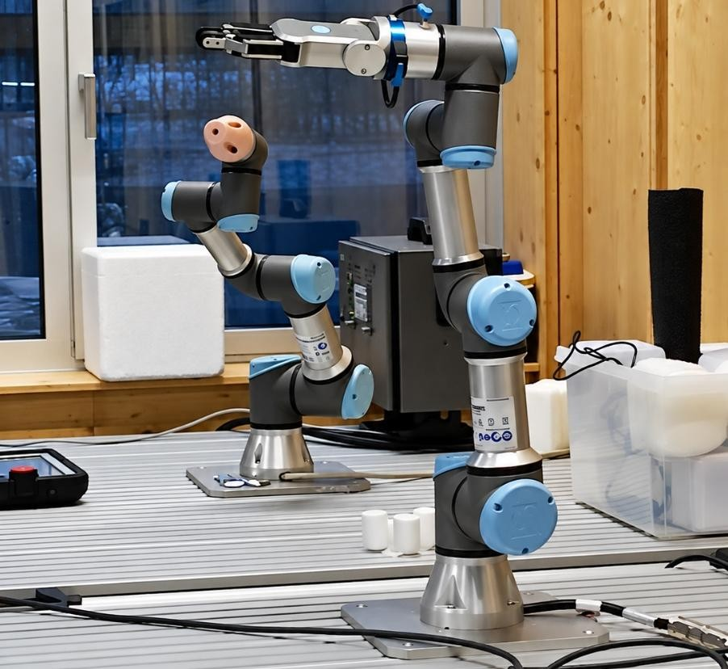
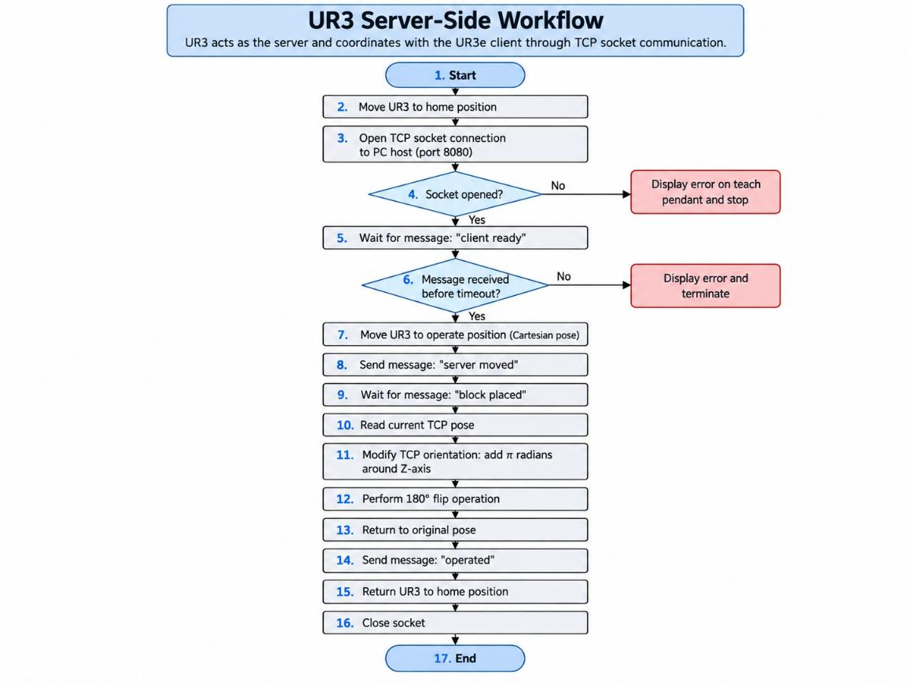
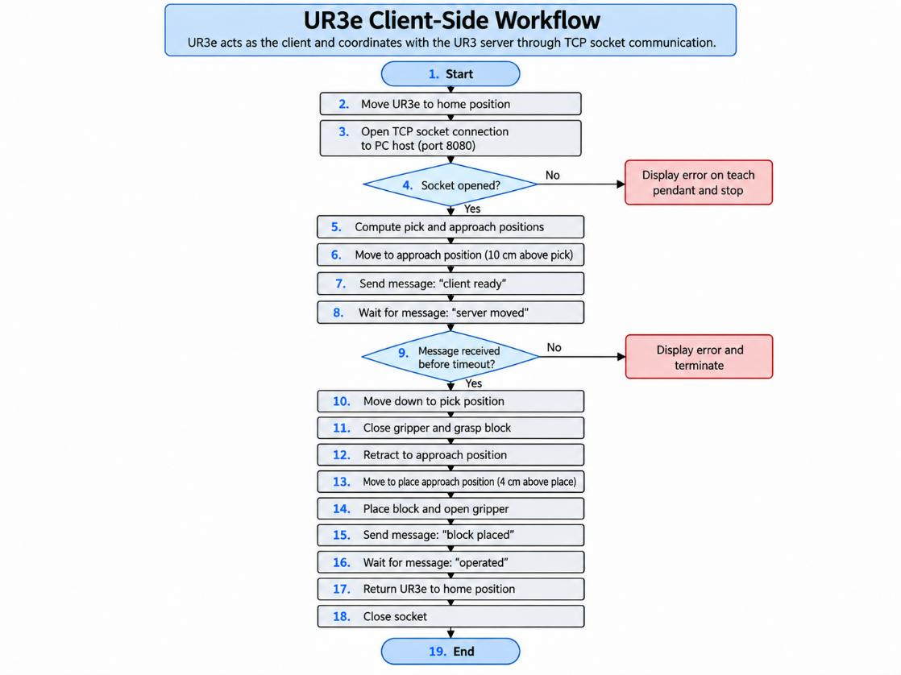

ROBOT 01
UR3e · Manipulation
Uses the OnRobot RG2 gripper to collect a wooden block, transport it, place it and report completion.
Medical Robotics · Academic Project
Synchronizing UR3 and UR3e robotic arms through TCP/IP communication for a controlled pick-and-place sequence and a simulated secondary operation.
Team project · David Arias, Carla Berard & Claudia Montero

01 / Overview
Each robot follows its own motion program, but progresses only after exchanging a precise sequence of messages through a PC-hosted TCP relay.
ROBOT 01
Uses the OnRobot RG2 gripper to collect a wooden block, transport it, place it and report completion.
ROBOT 02
Moves to the designated operating pose, rotates its tool, and acknowledges when the operation is complete.
NETWORK
Routes text messages between the robots to sequence movement and reduce conflicting actions. Relay script not included.
02 / System Architecture
03 / Workflow
The program uses explicit message acknowledgements to determine when the next robot is allowed to act.
UR3's secondary manipulation is simulated by tool rotation; the robots do not jointly handle the block.


04 / Implementation
Selected excerpts from the actual URScript programs.
socket_send_string("client ready", socket_name="sock")
moved = socket_read_string(socket_name="sock", timeout=20)
if moved != "server moved":
popup("Error", "No llegó 'server moved'", True)
halt()
end
movel(pick_pose, a=0.5, v=0.1)
rg_grip(0, 10)
rg_payload_set(0.01)The repository includes the complete original code for both robots. The PC-side middleware is not included.
05 / Engineering Takeaways
Working with separate robot controllers requires planning more than just trajectories: message delivery, timeouts, robot-to-robot synchronization, tool setup and calibrated approach poses all affect operation.
The motion code has not been re-tested as part of publishing this portfolio. Calibrate poses, supply the original middleware and verify joint/tool motions before operating physical robots. The UR3 tool-rotation implementation needs geometric validation.